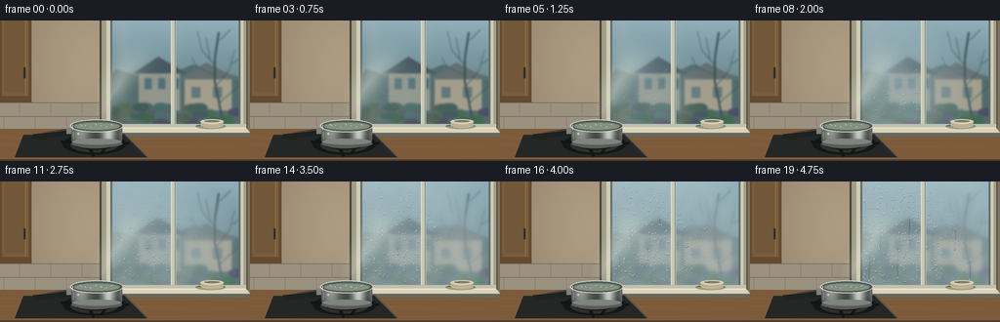
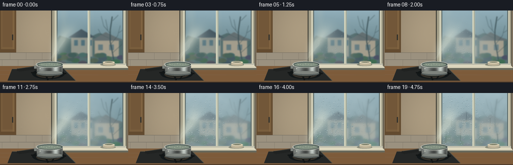
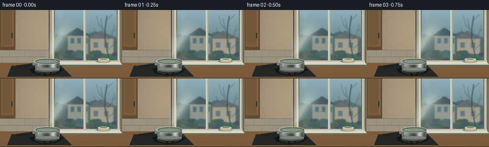
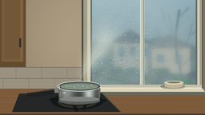

CODING AGENTS AS PIXEL WORLD MODELS
traex/GPT-6.1-Sol · phygen_112
点击播放 · 原生 RGB 像素
逐轮保存的候选
回放视频、检查图与代码变化。
每份候选均可单独播放。实际图片检查记录在下方工具轨迹中。
候选 01播放与检查图
点击播放 · 原生 RGB 像素

展开代码变化
--- 上一保存版本
+++ 本次保存版本
@@ -0,0 +1,232 @@
+from pathlib import Path
+import json
+import numpy as np
+from PIL import Image, ImageDraw, ImageFilter
+import artifact_io
+
+ROOT=Path(__file__).resolve().parent
+spec=json.loads((ROOT/'task_spec.json').read_text())
+W,H=spec['width'],spec['height']
+S=3
+w,h=W*S,H*S
+Y,X=np.mgrid[0:h,0:w].astype(float)/S
+rng=np.random.default_rng(112)
+
+def image(a): return Image.fromarray(np.uint8(np.clip(a,0,255)), 'RGB')
+def array(im): return np.asarray(im).astype(float)
+def rect(draw,box,fill,width=1,outline=None):
+ draw.rectangle(tuple(int(v*S) for v in box),fill=fill,outline=outline,width=max(1,int(width*S)))
+def ellipse(draw,box,fill,outline=None,width=1):
+ draw.ellipse(tuple(int(v*S) for v in box),fill=fill,outline=outline,width=max(1,int(width*S)))
+def line(draw,pts,fill,width=1):
+ draw.line([(int(x*S),int(y*S)) for x,y in pts],fill=fill,width=max(1,int(width*S)))
+def polygon(draw,pts,fill): draw.polygon([(int(x*S),int(y*S)) for x,y in pts],fill=fill)
+def blend(a,b,m):return a*(1-m[...,None])+b*m[...,None]
+
+# Warm interior plaster, lit naturally from the cold blue window.
+noise=rng.normal(0,.65,(h,w))
+light=np.exp(-((X-95)/111)**2-((Y-45)/135)**2)
+base=np.zeros((h,w,3))
+base[:]=[121,109,91]
+base+=light[...,None]*np.array([51,47,38])
+base+=noise[...,None]
+im=image(base)
+d=ImageDraw.Draw(im)
+# A quiet cabinet edge and tiled backsplash give the space its kitchen scale.
+rect(d,(0,0,32,84),(99,75,48))
+rect(d,(2,0,29,77),(121,94,61))
+rect(d,(5,0,25,73),(114,87,57))
+line(d,[(26,0),(26,77)],(145,113,75),.8)
+rect(d,(24,48,26,59),(47,48,44))
+rect(d,(0,84,105,112),(155,145,127))
+for yy in [84,98,111]:line(d,[(0,yy),(105,yy)],(109,105,94),.7)
+for xx in [20,52,84]:line(d,[(xx,84),(xx,98)],(113,109,98),.65)
+for xx in [4,36,68,100]:line(d,[(xx,98),(xx,111)],(113,109,98),.65)
+# Frame recess and old painted window surround.
+rect(d,(102,0,253,116),(68,67,58))
+rect(d,(104,0,252,115),(162,157,135))
+rect(d,(109,0,249,112),(207,204,180))
+rect(d,(113,0,246,108),(96,111,110))
+base=array(im)
+
+# A softly out-of-focus wintry exterior: sky, distant buildings and bare branches.
+out=np.zeros_like(base)
+sky=np.clip(Y/110,0,1)
+out[:]=np.array([145,174,185])[None,None,:]*(1-sky[...,None])+np.array([82,111,115])[None,None,:]*sky[...,None]
+out+=rng.normal(0,.5,(h,w))[...,None]
+ex=image(out); ed=ImageDraw.Draw(ex)
+polygon(ed,[(103,67),(119,50),(139,56),(160,47),(178,53),(197,45),(222,50),(253,61),(256,109),(104,109)],(82,107,108))
+rect(ed,(142,51,184,92),(145,149,139))
+polygon(ed,[(136,54),(162,37),(191,54)],(70,88,97))
+for xx in [148,162,176]:rect(ed,(xx,59,xx+7,70),(80,111,121))
+rect(ed,(189,58,237,92),(163,157,140))
+polygon(ed,[(183,60),(211,43),(245,60)],(99,111,113))
+for xx in [196,218]:rect(ed,(xx,68,xx+9,79),(98,120,125))
+# Outside bare sapling branches, unmistakably on the far side of the glass.
+branches=[[(229,110),(224,82),(220,63),(220,39),(224,12)],[(222,66),(235,50),(240,30)],[(220,46),(207,31),(202,11)],[(225,84),(244,67),(249,54)],[(215,39),(211,18)],[(237,44),(250,36)],[(221,57),(202,48),(196,37)],[(225,20),(236,9)]]
+for k,pts in enumerate(branches):line(ed,pts,(58,79,84),2.0 if k==0 else .8)
+for i in range(35):
+ xx=rng.uniform(106,249); yy=rng.uniform(88,114)
+ ellipse(ed,(xx-8,yy-4,xx+9,yy+5),tuple(rng.integers([58,81,75],[95,112,105])))
+ex=ex.filter(ImageFilter.GaussianBlur(1.0*S))
+external=array(ex)
+blurred=array(ex.filter(ImageFilter.GaussianBlur(3.4*S)))
+glass=((X>=115)&(X<=175)&(Y<106))|((X>=180)&(X<=244)&(Y<106))
+# Window reflection is faint and fixed, not pasted on top of the condensation.
+reflection=np.exp(-((X-126)/8)**2)*.08+np.exp(-((X-184)/4)**2)*.03
+external=blend(external,np.broadcast_to([221,218,188],base.shape),reflection)
+base=blend(base,external,glass.astype(float))
+
+# Sill, counter and stovetop are rendered separately so that vapor is behind foreground.
+fg=Image.new('RGBA',(w,h),(0,0,0,0)); fd=ImageDraw.Draw(fg)
+rect(fd,(102,106,252,110),(194,192,173,255))
+polygon(fd,[(100,110),(252,110),(256,115),(97,115)],(217,211,186,255))
+line(fd,[(102,110),(251,110)],(242,234,205,255),1)
+rect(fd,(97,115,256,119),(104,104,91,255))
+# Foreground butcher-block countertop.
+polygon(fd,[(0,111),(67,111),(100,119),(256,119),(256,144),(0,144)],(125,91,58,255))
+for yy in [120,128,141]:line(fd,[(0,yy),(256,yy+1)],(100,70,43,100),.45)
+line(fd,[(0,143),(256,143)],(78,57,39,255),2)
+# Right sill: small muted ceramic bowl.
+ellipse(fd,(200,106,231,111),(86,88,73,110))
+ellipse(fd,(205,103,229,110),(189,178,151,255))
+rect(fd,(207,103,227,106),(175,166,144,255))
+ellipse(fd,(205,101,229,106),(216,205,178,255))
+ellipse(fd,(209,102,225,104),(119,124,102,255))
+# Black hob, elliptic burner and cast iron grate.
+polygon(fd,[(24,117),(127,116),(151,140),(15,140)],(37,39,38,255))
+line(fd,[(25,117),(127,116),(151,140)],(82,82,73,255),1)
+ellipse(fd,(64,116,129,137),(19,24,25,255))
+ellipse(fd,(72,120,121,135),(51,47,40,255))
+ellipse(fd,(77,122,116,132),(13,19,21,255))
+for a,b in [((62,124),(132,126)),((83,114),(96,139)),((118,116),(103,137))]:line(fd,[a,b],(18,21,21,255),3)
+# Warm glints beneath the heated saucepan.
+ellipse(fd,(78,124,115,131),(83,80,65,255))
+for i in range(10):
+ xx=80+i*3.4
+ line(fd,[(xx,128),(xx+.7,125)],(59,128,169,255),.7)
+# Long black handle, left of the open saucepan.
+polygon(fd,[(78,112),(68,111),(34,116),(33,120),(39,122),(74,117),(81,118)],(32,34,33,255))
+line(fd,[(35,116),(68,112),(78,113)],(91,88,77,255),1)
+rect(fd,(68,110,80,116),(124,129,123,255))
+# Photographic brushed stainless body as shaded cylinder.
+body_mask=((X>=73)&(X<=125)&(Y>=108)&(Y<=123)) | (((X-99)/26)**2+((Y-123)/6.8)**2<=1)&(Y>=122)
+body=np.zeros((h,w,3))
+u=(X-73)/52
+metal=51+80*np.exp(-((u-.19)/.18)**2)+134*np.exp(-((u-.73)/.13)**2)+35*np.exp(-((u-.98)/.04)**2)
+metal+=18*np.exp(-((Y-114)/7)**2)-24*np.clip((Y-121)/8,0,1)
+metal+=1.4*np.sin(Y*13)+rng.normal(0,.65,(h,w))
+body[...,0]=metal*.96;body[...,1]=metal;body[...,2]=metal*.97
+metal_im=image(body).convert('RGBA')
+metal_im.putalpha(Image.fromarray(np.uint8(body_mask*255)))
+fg=Image.alpha_composite(fg,metal_im);fd=ImageDraw.Draw(fg)
+ellipse(fd,(73,122,125,130),(87,94,92,255))
+ellipse(fd,(74,121,124,127),(126,131,125,255))
+# Fill body back in to make bottom only a fine rounded band.
+rect(fd,(75,119,123,123),(114,121,115,0)) if False else None
+ellipse(fd,(71.8,101.5,126.2,114.5),(205,208,196,255))
+ellipse(fd,(73,102.4,125,113.6),(68,80,76,255))
+ellipse(fd,(75,103.5,123,112),(94,109,102,255))
+ellipse(fd,(76,104.8,122,112),(131,145,130,255))
+line(fd,[(74,107),(74,112)],(235,232,214,255),.7)
+# Metal rivet catches the incoming light.
+ellipse(fd,(79,115,81,117),(195,200,187,255))
+line(fd,[(75,114),(75,121)],(192,193,176,255),.65)
+foreground=np.asarray(fg).astype(float)
+
+# Fixed droplet sites. Condensation nucleates densely around steam contact, spreads out,
+# then neighboring beads merge into gravity-driven runnels in this accelerated view.
+drops=[]
+for i in range(490):
+ xx=rng.uniform(116,243); yy=rng.uniform(6,104)
+ proximity=((xx-141)/72)**2+((yy-69)/61)**2
+ birth=.08+.52*proximity+rng.uniform(-.12,.30)
+ radius=rng.uniform(.30,.87)
+ drops.append((xx,yy,birth,radius,rng.random()))
+runs=[]
+for xx,yy,start in [(133,47,.51),(151,68,.57),(163,35,.64),(191,60,.72),(210,49,.83),(122,76,.61),(225,81,.85)]:
+ runs.append((xx,yy,start,rng.uniform(19,31)))
+
+frames=[]
+for f in range(spec['frames']):
+ t=f/(spec['frames']-1)
+ # Fog starts at the lower left contact zone, advances across the cool glass.
+ dist=((X-134)/87)**2+((Y-76)/73)**2
+ advance=np.clip((t*1.48-.08-dist*.40)*1.8,0,1)
+ irregular=.96+.035*np.sin(X*.31+Y*.19)+.025*np.sin(Y*.39-X*.15)
+ fog=np.clip(advance*irregular*.82,0,.86)*glass
+ # Light is scattered by the growing microdroplet layer; background detail vanishes.
+ hazy=blurred*.44+np.array([183,203,207])[None,None,:]*.56
+ a=blend(base,hazy,fog)
+ # Texture of microscopic moisture is only visible as the pane becomes fogged.
+ grain=(np.sin(X*9.1+Y*5.7)+np.sin(X*4.4-Y*9.3))*.52
+ a+=grain[...,None]*fog[...,None]
+ wet=image(a)
+ # Transparent droplet refraction: cool dark lower edge and tiny bright upper glint.
+ layer=Image.new('RGBA',(w,h),(0,0,0,0));ld=ImageDraw.Draw(layer)
+ for xx,yy,birth,rad,z in drops:
+ age=t-birth
+ if age<=0:continue
+ r=rad*min(1.65,.35+age*2.1)
+ opacity=int(min(1,age*7)*150)
+ ellipse(ld,(xx-r,yy-r*.85,xx+r,yy+r*1.16),(84,114,122,int(opacity*.43)))
+ ellipse(ld,(xx-r*.72,yy-r*.75,xx+r*.58,yy+r*.60),(194,213,216,int(opacity*.43)))
+ line(ld,[(xx-r*.55,yy-r*.52),(xx+.05,yy-r*.66)],(244,249,239,opacity),.27)
+ line(ld,[(xx-r*.25,yy+r*.90),(xx+r*.54,yy+r*.61)],(64,94,103,int(opacity*.85)),.25)
+ wet=Image.alpha_composite(wet.convert('RGBA'),layer)
+ a=array(wet.convert('RGB'))
+ # Runnels clear tracks through the fog, revealing the darker view beneath.
+ trails=np.zeros((h,w))
+ heads=[]
+ for xx,yy,start,length in runs:
+ if t<start:continue
+ p=(t-start)/(1-start)
+ bottom=yy+length*p**1.6
+ curve=xx+.38*np.sin((Y-yy)*.24)+.16*(Y-yy)/20
+ path=np.exp(-((X-curve)/.48)**2)*((Y>=yy)&(Y<=bottom))*glass
+ trails=np.maximum(trails,path*.48)
+ heads.append((xx+.38*np.sin((bottom-yy)*.24),bottom,p))
+ a=blend(a,external,trails)
+ wet=image(a).convert('RGBA');ld=ImageDraw.Draw(wet)
+ for xx,yy,p in heads:
+ ellipse(ld,(xx-.8,yy-1.45,xx+.8,yy+.75),(100,130,138,255))
+ ellipse(ld,(xx-.47,yy-1.2,xx+.16,yy-.2),(222,235,232,255))
+ a=array(wet.convert('RGB'))
+ # A continually replenished buoyant plume curls toward the window.
+ vapor=np.zeros((h,w))
+ seconds=t*5
+ for j in range(22):
+ age=(seconds+j*.20)%4.4
+ v=age/4.4
+ cx=99+43*v+5*np.sin(age*2.1+seconds*.6)*v
+ cy=103-75*v
+ sx=3.6+10*v;sy=3.5+8*v
+ mass=.080*np.sin(np.pi*min(v/.96,1))**.7
+ puff=np.exp(-.5*((X-cx)/sx)**2-.5*((Y-cy)/sy)**2)
+ vapor+=mass*puff
+ # Thin curved filaments near the source make vapor look wispy rather than solid smoke.
+ height=np.clip((103-Y)/70,0,1)
+ center=99+height*41+3*np.sin(height*15-seconds*2.6)*height
+ filament=np.exp(-((X-center)/(1.5+height*3.2))**2)*np.exp(-((Y-80)/23)**2)
+ vapor+=filament*.075
+ vapor*=((Y<107)&(X>69))
+ vapor=np.clip(vapor,0,.44)
+ a=blend(a,np.broadcast_to([222,229,215],a.shape),vapor)
+ # Overlay the window sash in front of glass condensation (never on wood).
+ scene=image(a);sd=ImageDraw.Draw(scene)
+ rect(sd,(175,0,180,107),(199,201,180))
+ line(sd,[(175,0),(175,106)],(239,235,206),.7)
+ line(sd,[(179,0),(179,106)],(101,120,117),.7)
+ # Foreground stove and pan, with rising vapor starting directly at water surface.
+ scene=Image.alpha_composite(scene.convert('RGBA'),fg)
+ sd=ImageDraw.Draw(scene)
+ for b in range(8):
+ phase=(seconds*1.2+b*.131)%1
+ xx=82+(b*5.4)%36; yy=106.7+(b%3)*1.1
+ rr=.30+phase*.5
+ ellipse(sd,(xx-rr,yy-rr*.45,xx+rr,yy+rr*.45),(179,187,163,180),outline=(201,211,181,200),width=.18)
+ # Final optical softness and subtle warm/cool color separation.
+ scene=scene.convert('RGB').resize((W,H),Image.Resampling.LANCZOS)
+ frames.append(np.asarray(scene,dtype=np.uint8))
+artifact_io.save(np.stack(frames),ROOT)
+print('Saved',len(frames),'RGB frames.')
候选 02播放与检查图
点击播放 · 原生 RGB 像素


展开代码变化
--- 上一保存版本
+++ 本次保存版本
@@ -12,7 +12,7 @@
Y,X=np.mgrid[0:h,0:w].astype(float)/S
rng=np.random.default_rng(112)
-def image(a): return Image.fromarray(np.uint8(np.clip(a,0,255)), 'RGB')
+def image(a): return Image.fromarray(np.uint8(np.clip(a,0,255)))
def array(im): return np.asarray(im).astype(float)
def rect(draw,box,fill,width=1,outline=None):
draw.rectangle(tuple(int(v*S) for v in box),fill=fill,outline=outline,width=max(1,int(width*S)))
@@ -123,7 +123,6 @@
ellipse(fd,(73,122,125,130),(87,94,92,255))
ellipse(fd,(74,121,124,127),(126,131,125,255))
# Fill body back in to make bottom only a fine rounded band.
-rect(fd,(75,119,123,123),(114,121,115,0)) if False else None
ellipse(fd,(71.8,101.5,126.2,114.5),(205,208,196,255))
ellipse(fd,(73,102.4,125,113.6),(68,80,76,255))
ellipse(fd,(75,103.5,123,112),(94,109,102,255))
@@ -201,16 +200,23 @@
cx=99+43*v+5*np.sin(age*2.1+seconds*.6)*v
cy=103-75*v
sx=3.6+10*v;sy=3.5+8*v
- mass=.080*np.sin(np.pi*min(v/.96,1))**.7
+ mass=.115*np.sin(np.pi*min(v/.96,1))**.7
puff=np.exp(-.5*((X-cx)/sx)**2-.5*((Y-cy)/sy)**2)
vapor+=mass*puff
# Thin curved filaments near the source make vapor look wispy rather than solid smoke.
height=np.clip((103-Y)/70,0,1)
center=99+height*41+3*np.sin(height*15-seconds*2.6)*height
filament=np.exp(-((X-center)/(1.5+height*3.2))**2)*np.exp(-((Y-80)/23)**2)
- vapor+=filament*.075
+ vapor+=filament*.13
+ # Narrow, animated steam ribbons rise from the hot water and unwind into mist.
+ for offset in [-2.4,2.8]:
+ strand=99+offset+height*39+3.0*np.sin(height*18-seconds*2.9+offset)*np.sin(height*np.pi)
+ strandwidth=.72+1.4*height
+ ribbon=np.exp(-((X-strand)/strandwidth)**2)
+ ribbon*=np.exp(-((Y-80)/24)**2)*((Y<103)&(Y>38))
+ vapor+=ribbon*.105
vapor*=((Y<107)&(X>69))
- vapor=np.clip(vapor,0,.44)
+ vapor=np.clip(vapor,0,.54)
a=blend(a,np.broadcast_to([222,229,215],a.shape),vapor)
# Overlay the window sash in front of glass condensation (never on wood).
scene=image(a);sd=ImageDraw.Draw(scene)
可观测工具轨迹
实际执行的命令与返回图片。
命令 1exit 0
/bin/bash -lc 'ls -la && cat prompt.txt && cat GENERATION_RULES.md && cat task_spec.json'
命令 2exit 0
/bin/bash -lc 'cat artifact_io.py'
命令 3exit 0
/bin/bash -lc "python - <<'PY'
import numpy, PIL
print('numpy/Pillow available')
PY"命令 4exit 0
/bin/bash -lc "cat > generate.py <<'PY'
from pathlib import Path
import json
import numpy as np
from PIL import Image, ImageDraw, ImageFilter
import artifact_io
ROOT=Path(__file__).resolve().parent
spec=json.loads((ROOT/'task_spec.json').read_text())
W,H=spec['width'],spec['height']
S=3
w,h=W*S,H*S
Y,X=np.mgrid[0:h,0:w].astype(float)/S
rng=np.random.default_rng(112)
def image(a): return Image.fromarray(np.uint8(np.clip(a,0,255)), 'RGB')
def array(im): return np.asarray(im).astype(float)
def rect(draw,box,fill,width=1,outline=None):
draw.rectangle(tuple(int(v*S) for v in box),fill=fill,outline=outline,width=max(1,int(width*S)))
def ellipse(draw,box,fill,outline=None,width=1):
draw.ellipse(tuple(int(v*S) for v in box),fill=fill,outline=outline,width=max(1,int(width*S)))
def line(draw,pts,fill,width=1):
draw.line([(int(x*S),int(y*S)) for x,y in pts],fill=fill,width=max(1,int(width*S)))
def polygon(draw,pts,fill): draw.polygon([(int(x*S),int(y*S)) for x,y in pts],fill=fill)
def blend(a,b,m):return a*(1-m[...,None])+b*m[...,None]
# Warm interior plaster, lit naturally from the cold blue window.
noise=rng.normal(0,.65,(h,w))
light=np.exp(-((X-95)/111)**2-((Y-45)/135)**2)
base=np.zeros((h,w,3))
base[:]=[121,109,91]
base+=light[...,None]*np.array([51,47,38])
base+=noise[...,None]
im=image(base)
d=ImageDraw.Draw(im)
# A quiet cabinet edge and tiled backsplash give the space its kitchen scale.
rect(d,(0,0,32,84),(99,75,48))
rect(d,(2,0,29,77),(121,94,61))
rect(d,(5,0,25,73),(114,87,57))
line(d,[(26,0),(26,77)],(145,113,75),.8)
rect(d,(24,48,26,59),(47,48,44))
rect(d,(0,84,105,112),(155,145,127))
for yy in [84,98,111]:line(d,[(0,yy),(105,yy)],(109,105,94),.7)
for xx in [20,52,84]:line(d,[(xx,84),(xx,98)],(113,109,98),.65)
for xx in [4,36,68,100]:line(d,[(xx,98),(xx,111)],(113,109,98),.65)
# Frame recess and old painted window surround.
rect(d,(102,0,253,116),(68,67,58))
rect(d,(104,0,252,115),(162,157,135))
rect(d,(109,0,249,112),(207,204,180))
rect(d,(113,0,246,108),(96,111,110))
base=array(im)
# A softly out-of-focus wintry exterior: sky, distant buildings and bare branches.
out=np.zeros_like(base)
sky=np.clip(Y/110,0,1)
out[:]=np.array([145,174,185])[None,None,:]*(1-sky[...,None])+np.array([82,111,115])[None,None,:]*sky[...,None]
out+=rng.normal(0,.5,(h,w))[...,None]
ex=image(out); ed=ImageDraw.Draw(ex)
polygon(ed,[(103,67),(119,50),(139,56),(160,47),(178,53),(197,45),(222,50),(253,61),(256,109),(104,109)],(82,107,108))
rect(ed,(142,51,184,92),(145,149,139))
polygon(ed,[(136,54),(162,37),(191,54)],(70,88,97))
for xx in [148,162,176]:rect(ed,(xx,59,xx+7,70),(80,111,121))
rect(ed,(189,58,237,92),(163,157,140))
polygon(ed,[(183,60),(211,43),(245,60)],(99,111,113))
for xx in [196,218]:rect(ed,(xx,68,xx+9,79),(98,120,125))
# Outside bare sapling branches, unmistakably on the far side of the glass.
branches=[[(229,110),(224,82),(220,63),(220,39),(224,12)],[(222,66),(235,50),(240,30)],[(220,46),(207,31),(202,11)],[(225,84),(244,67),(249,54)],[(215,39),(211,18)],[(237,44),(250,36)],[(221,57),(202,48),(196,37)],[(225,20),(236,9)]]
for k,pts in enumerate(branches):line(ed,pts,(58,79,84),2.0 if k==0 else .8)
for i in range(35):
xx=rng.uniform(106,249); yy=rng.uniform(88,114)
ellipse(ed,(xx-8,yy-4,xx+9,yy+5),tuple(rng.integers([58,81,75],[95,112,105])))
ex=ex.filter(ImageFilter.GaussianBlur(1.0*S))
external=array(ex)
blurred=array(ex.filter(ImageFilter.GaussianBlur(3.4*S)))
glass=((X>=115)&(X<=175)&(Y<106))|((X>=180)&(X<=244)&(Y<106))
# Window reflection is faint and fixed, not pasted on top of the condensation.
reflection=np.exp(-((X-126)/8)**2)*.08+np.exp(-((X-184)/4)**2)*.03
external=blend(external,np.broadcast_to([221,218,188],base.shape),reflection)
base=blend(base,external,glass.astype(float))
# Sill, counter and stovetop are rendered separately so that vapor is behind foreground.
fg=Image.new('RGBA',(w,h),(0,0,0,0)); fd=ImageDraw.Draw(fg)
rect(fd,(102,106,252,110),(194,192,173,255))
polygon(fd,[(100,110),(252,110),(256,115),(97,115)],(217,211,186,255))
line(fd,[(102,110),(251,110)],(242,234,205,255),1)
rect(fd,(97,115,256,119),(104,104,91,255))
# Foreground butcher-block countertop.
polygon(fd,[(0,111),(67,111),(100,119),(256,119),(256,144),(0,144)],(125,91,58,255))
for yy in [120,128,141]:line(fd,[(0,yy),(256,yy+1)],(100,70,43,100),.45)
line(fd,[(0,143),(256,143)],(78,57,39,255),2)
# Right sill: small muted ceramic bowl.
ellipse(fd,(200,106,231,111),(86,88,73,110))
ellipse(fd,(205,103,229,110),(189,178,151,255))
rect(fd,(207,103,227,106),(175,166,144,255))
ellipse(fd,(205,101,229,106),(216,205,178,255))
ellipse(fd,(209,102,225,104),(119,124,102,255))
# Black hob, elliptic burner and cast iron grate.
polygon(fd,[(24,117),(127,116),(151,140),(15,140)],(37,39,38,255))
line(fd,[(25,117),(127,116),(151,140)],(82,82,73,255),1)
ellipse(fd,(64,116,129,137),(19,24,25,255))
ellipse(fd,(72,120,121,135),(51,47,40,255))
ellipse(fd,(77,122,116,132),(13,19,21,255))
for a,b in [((62,124),(132,126)),((83,114),(96,139)),((118,116),(103,137))]:line(fd,[a,b],(18,21,21,255),3)
# Warm glints beneath the heated saucepan.
ellipse(fd,(78,124,115,131),(83,80,65,255))
for i in range(10):
xx=80+i*3.4
line(fd,[(xx,128),(xx+.7,125)],(59,128,169,255),.7)
# Long black handle, left of the open saucepan.
polygon(fd,[(78,112),(68,111),(34,116),(33,120),(39,122),(74,117),(81,118)],(32,34,33,255))
line(fd,[(35,116),(68,112),(78,113)],(91,88,77,255),1)
rect(fd,(68,110,80,116),(124,129,123,255))
# Photographic brushed stainless body as shaded cylinder.
body_mask=((X>=73)&(X<=125)&(Y>=108)&(Y<=123)) | (((X-99)/26)**2+((Y-123)/6.8)**2<=1)&(Y>=122)
body=np.zeros((h,w,3))
u=(X-73)/52
metal=51+80*np.exp(-((u-.19)/.18)**2)+134*np.exp(-((u-.73)/.13)**2)+35*np.exp(-((u-.98)/.04)**2)
metal+=18*np.exp(-((Y-114)/7)**2)-24*np.clip((Y-121)/8,0,1)
metal+=1.4*np.sin(Y*13)+rng.normal(0,.65,(h,w))
body[...,0]=metal*.96;body[...,1]=metal;body[...,2]=metal*.97
metal_im=image(body).convert('RGBA')
metal_im.putalpha(Image.fromarray(np.uint8(body_mask*255)))
fg=Image.alpha_composite(fg,metal_im);fd=ImageDraw.Draw(fg)
ellipse(fd,(73,122,125,130),(87,94,92,255))
ellipse(fd,(74,121,124,127),(126,131,125,255))
# Fill body back in to make bottom only a fine rounded band.
rect(fd,(75,119,123,123),(114,121,115,0)) if False else None
ellipse(fd,(71.8,101.5,126.2,114.5),(205,208,196,255))
ellipse(fd,(73,102.4,125,113.6),(68,80,76,255))
ellipse(fd,(75,103.5,123,112),(94,109,102,255))
ellipse(fd,(76,104.8,122,112),(131,145,130,255))
line(fd,[(74,107),(74,112)],(235,232,214,255),.7)
# Metal rivet catches the incoming light.
ellipse(fd,(79,115,81,117),(195,200,187,255))
line(fd,[(75,114),(75,121)],(192,193,176,255),.65)
foreground=np.asarray(fg).astype(float)
# Fixed droplet sites. Condensation nucleates densely around steam contact, spreads out,
# then neighboring beads merge into gravity-driven runnels in this accelerated view.
drops=[]
for i in range(490):
xx=rng.uniform(116,243); yy=rng.uniform(6,104)
proximity=((xx-141)/72)**2+((yy-69)/61)**2
birth=.08+.52*proximity+rng.uniform(-.12,.30)
radius=rng.uniform(.30,.87)
drops.append((xx,yy,birth,radius,rng.random()))
runs=[]
for xx,yy,start in [(133,47,.51),(151,68,.57),(163,35,.64),(191,60,.72),(210,49,.83),(122,76,.61),(225,81,.85)]:
runs.append((xx,yy,start,rng.uniform(19,31)))
frames=[]
for f in range(spec['frames']):
t=f/(spec['frames']-1)
# Fog starts at the lower left contact zone, advances across the cool glass.
dist=((X-134)/87)**2+((Y-76)/73)**2
advance=np.clip((t*1.48-.08-dist*.40)*1.8,0,1)
irregular=.96+.035*np.sin(X*.31+Y*.19)+.025*np.sin(Y*.39-X*.15)
fog=np.clip(advance*irregular*.82,0,.86)*glass
# Light is scattered by the growing microdroplet layer; background detail vanishes.
hazy=blurred*.44+np.array([183,203,207])[None,None,:]*.56
a=blend(base,hazy,fog)
# Texture of microscopic moisture is only visible as the pane becomes fogged.
grain=(np.sin(X*9.1+Y*5.7)+np.sin(X*4.4-Y*9.3))*.52
a+=grain[...,None]*fog[...,None]
wet=image(a)
# Transparent droplet refraction: cool dark lower edge and tiny bright upper glint.
layer=Image.new('RGBA',(w,h),(0,0,0,0));ld=ImageDraw.Draw(layer)
for xx,yy,birth,rad,z in drops:
age=t-birth
if age<=0:continue
r=rad*min(1.65,.35+age*2.1)
opacity=int(min(1,age*7)*150)
ellipse(ld,(xx-r,yy-r*.85,xx+r,yy+r*1.16),(84,114,122,int(opacity*.43)))
ellipse(ld,(xx-r*.72,yy-r*.75,xx+r*.58,yy+r*.60),(194,213,216,int(opacity*.43)))
line(ld,[(xx-r*.55,yy-r*.52),(xx+.05,yy-r*.66)],(244,249,239,opacity),.27)
line(ld,[(xx-r*.25,yy+r*.90),(xx+r*.54,yy+r*.61)],(64,94,103,int(opacity*.85)),.25)
wet=Image.alpha_composite(wet.convert('RGBA'),layer)
a=array(wet.convert('RGB'))
# Runnels clear tracks through the fog, revealing the darker view beneath.
trails=np.zeros((h,w))
heads=[]
for xx,yy,start,length in runs:
if t<start:continue
p=(t-start)/(1-start)
bottom=yy+length*p**1.6
curve=xx+.38*np.sin((Y-yy)*.24)+.16*(Y-yy)/20
path=np.exp(-((X-curve)/.48)**2)*((Y>=yy)&(Y<=bottom))*glass
trails=np.maximum(trails,path*.48)
heads.append((xx+.38*np.sin((bottom-yy)*.24),bottom,p))
a=blend(a,external,trails)
wet=image(a).convert('RGBA');ld=ImageDraw.Draw(wet)
for xx,yy,p in heads:
ellipse(ld,(xx-.8,yy-1.45,xx+.8,yy+.75),(100,130,138,255))
ellipse(ld,(xx-.47,yy-1.2,xx+.16,yy-.2),(222,235,232,255))
a=array(wet.convert('RGB'))
# A continually replenished buoyant plume curls toward the window.
vapor=np.zeros((h,w))
seconds=t*5
for j in range(22):
age=(seconds+j*.20)%4.4
v=age/4.4
cx=99+43*v+5*np.sin(age*2.1+seconds*.6)*v
cy=103-75*v
sx=3.6+10*v;sy=3.5+8*v
mass=.080*np.sin(np.pi*min(v/.96,1))**.7
puff=np.exp(-.5*((X-cx)/sx)**2-.5*((Y-cy)/sy)**2)
vapor+=mass*puff
# Thin curved filaments near the source make vapor look wispy rather than solid smoke.
height=np.clip((103-Y)/70,0,1)
center=99+height*41+3*np.sin(height*15-seconds*2.6)*height
filament=np.exp(-((X-center)/(1.5+height*3.2))**2)*np.exp(-((Y-80)/23)**2)
vapor+=filament*.075
vapor*=((Y<107)&(X>69))
vapor=np.clip(vapor,0,.44)
a=blend(a,np.broadcast_to([222,229,215],a.shape),vapor)
# Overlay the window sash in front of glass condensation (never on wood).
scene=image(a);sd=ImageDraw.Draw(scene)
rect(sd,(175,0,180,107),(199,201,180))
line(sd,[(175,0),(175,106)],(239,235,206),.7)
line(sd,[(179,0),(179,106)],(101,120,117),.7)
# Foreground stove and pan, with rising vapor starting directly at water surface.
scene=Image.alpha_composite(scene.convert('RGBA'),fg)
sd=ImageDraw.Draw(scene)
for b in range(8):
phase=(seconds*1.2+b*.131)%1
xx=82+(b*5.4)%36; yy=106.7+(b%3)*1.1
rr=.30+phase*.5
ellipse(sd,(xx-rr,yy-rr*.45,xx+rr,yy+rr*.45),(179,187,163,180),outline=(201,211,181,200),width=.18)
# Final optical softness and subtle warm/cool color separation.
scene=scene.convert('RGB').resize((W,H),Image.Resampling.LANCZOS)
frames.append(np.asarray(scene,dtype=np.uint8))
artifact_io.save(np.stack(frames),ROOT)
print('Saved',len(frames),'RGB frames.')
PY
python generate.py"命令 5exit 0
/bin/bash -lc "python - <<'PY'
p='generate.py'
s=open(p).read().replace(\"Image.fromarray(np.uint8(np.clip(a,0,255)), 'RGB')\", \"Image.fromarray(np.uint8(np.clip(a,0,255)))\")
s=s.replace(\"rect(fd,(75,119,123,123),(114,121,115,0)) if False else None\\n\", \"\")
s=s.replace(\"mass=.080*np.sin\", \"mass=.115*np.sin\")
s=s.replace(\"vapor+=filament*.075\", \"\"\"vapor+=filament*.13
# Narrow, animated steam ribbons rise from the hot water and unwind into mist.
for offset in [-2.4,2.8]:
strand=99+offset+height*39+3.0*np.sin(height*18-seconds*2.9+offset)*np.sin(height*np.pi)
strandwidth=.72+1.4*height
ribbon=np.exp(-((X-strand)/strandwidth)**2)
ribbon*=np.exp(-((Y-80)/24)**2)*((Y<103)&(Y>38))
vapor+=ribbon*.105\"\"\")
s=s.replace(\"np.clip(vapor,0,.44)\",\"np.clip(vapor,0,.54)\")
open(p,'w').write(s)
PY
python generate.py
ls -lh pixels.npz index.html inspection.png"视觉工具实际返回图片 1

视觉工具实际返回图片 2

保存候选 2 份；完成命令 5 次；可验证图片返回 2 张。原始 API 响应与完整日志保留在本地。